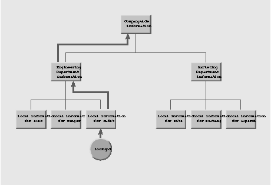
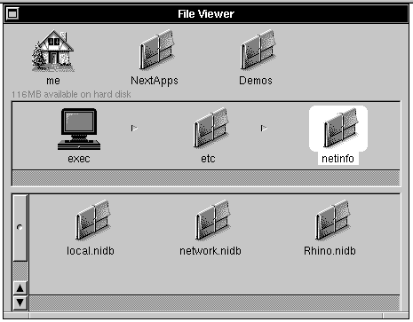
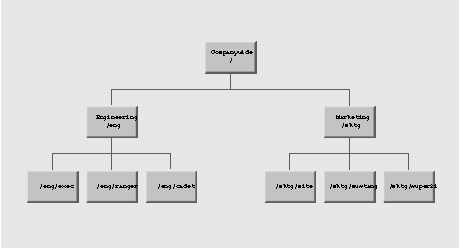

NEXTSTEP In Focus, Summer 1993 (Volume 3, Issue 3).
Copyright ©1993 by NeXT Computer, Inc. All Rights Reserved.
Getting Acquainted with NetInfo
Marc Majka
If you're just starting to administer NEXTSTEP systems and networks, you need to get acquainted with NetInfo. Because NetInfo is central to NEXTSTEP configuration and networking, it's useful for you to know what NetInfo does, how it's organized, and how you can use it to make your system administration tasks easier.
You don't have to be a NetInfo expert to set up a NEXTSTEP network, and you can continue to learn as you go. This article introduces the basic concepts of NetInfo and gives you a roadmap to follow so you can learn more on your own.
WHAT IS NETINFO?
NetInfo is a database system for information about computer and network configuration. It stores all kinds of information, including computer names and network addresses, e-mail system configuration settings, printer and fax modem names and locations, file server and client configuration settings, user account records, and so on. NetInfo doesn't provide those resources itself--it just describes how things are set up on your network. Processes that need that information can look it up in NetInfo. It's designed to be flexible and extensible, so that new kinds of information can be added at any time.
Information systems
Every computer system has some information system. With some systems, you have to set up each computer on your network individually, putting a copy of all the information into a local database or set of files. These systems are tedious and difficult to maintain. Every time you change the network, you have to update each computer's database!
Other information systems let you to set up a central database that contains common information. Every computer still has a local database for information that applies to just that computer, but it also consults the central database. It's easier to maintain a single copy of all the common information than a copy on every computer. This type of system works for small networks, but it doesn't work when you need to manage groups of computers, like departments or divisions of your company.
NetInfo lets you set up databases for individual computers and groups of computers. For example, if you want to set up a printer for the Marketing Department you just put a record for the printer in the Marketing Department's database.
These databases are arranged in a hierarchy. At the bottom of the hierarchy are the local databases, one for each computer. You can set up intermediate-level databases for different parts of your organization. The top-level database contains information that's available to all computers. Having NetInfo match your organization's structure makes your information management tasks easier.
Information lookup
Whenever a process running on one of your computers needs some information, it sends a request to a process named lookupd. Every computer has a lookupd that acts as an information clearinghouse for other processes running on that computer. lookupd consults the local NetInfo database first, then checks the next level up. It keeps going up levels until it has found what it's looking for or until it has climbed to the top-level database and its search has failed.
Every database contains information that identifies the next higher level. NetInfo database server processes use this information to contact the servers for the next level up in the hierarchy. The server processes give this contact information to lookupd, so that it can find its way from level to level.
It's up to you to decide how many databases there are, how many levels there are to search through, and how they're organized. For example, if you're managing the network for a large company, you might want to set up databases for every department, branch, and division in your organization. If your network is smaller, you might decide that it's enough to have just a local database for each computer and one central database for information that's common to your whole network.
In the example shown in Figure 1, the local database servers for the computers named exec, ranger, and cadet tell lookupd that the next level up is a server for the Engineering database. Servers for both the Engineering and Marketing databases tell lookupd that the next level up is a server for the companywide database.

Figure 1: lookupd starts its search with the local database server and works its way up.
When lookupd searches for information, it always climbs up the hierarchy and never looks down side branches. This means that information in the Marketing database is never accessed by a process running on a computer in the Engineering Department. If the Marketing database contains information about a printer, then everyone in the Marketing Department can use the printer, but no one in the Engineering Department can. Likewise, a file server set up for Engineering isn't accessible to other departments. To make a resource available to the whole company, put a record describing it in the top-level database.
Reliability
There's one problem with a database full of important information: There's only one copy! If the computer that runs the server process for that database crashes, or if the database files are damaged, then you've got big problems. Even if the computer that runs the database server just gets heavily loaded with other tasks for a while, you still have the problem of poor performance.
NetInfo's solution to this problem is to let you have several copies of the database, with a server process for each copy. The first copy of a database that you set up is the master copy. Additional copies are called clones. You can put a clone database and a database server process for the clone on any computer on your network. Clones provide reliability, since they can continue providing database information even if the master is not running. They also provide redundancy, since every clone is a backup copy, and load balancing, since all the clones provide information lookup services and share the load with the master.
The collection of all the server processes that have a copy of a database--the master and all its clones--is called a domain. What's central to a domain is its database. Sometimes it's useful to think of a domain as being the information in the database. At other times, you might find it useful to think of a domain as a set of cooperating server processes that each have an identical copy of a database. Both definitions are correct.
What's a server? What's a client?
A server is a process. As mentioned above, the master of a domain is a database server process that maintains the master copy of the database. A clone is a database server process that maintains a clone copy of a domain's database. You can have several databases on a single disk and several database server processes running on a single computer, so it's never true that a computer is a server. A computer is just a machine that runs a bunch of processes. One or more of those processes may be server processes.
A client is any process that contacts a server process to obtain a service, such as access to a shared resource like a printer or network file system, or to communicate data like e-mail. There are several processes that are regular NetInfo clients. lookupd is a good example. The tools that you use to manage NetInfo, like NetInfoManager and UserManager, are also NetInfo clients.
When a client needs information from a domain's database, it has a choice of connecting to either the master or a clone. In general, it maintains a connection to the server that responds most quickly to a connection request. (To find out how clients create and maintain connections to servers, see "NetInfo Binding and Connecting.")
Database updates
When you make a change to a database, NetInfo software automatically sends the change to the master server process. The master incorporates the change into its copy of the database, then sends updates to all its clone server processes. A list of clones is kept in the database itself, as are the name of the master server process and the network address of the computer that runs the master server.
Whenever a clone server process starts up, it looks in its own copy of the database to get the name of the master and the network address of the computer that runs the master. It contacts the master to make sure it's up to date before it starts providing lookup services using its own copy of the database. The master updates the clone if it's out of date.
Databases and servers
Any computer can have any number of NetInfo server processes running on it, each with its own database. It always has its own local database, and it can have others as well. For example, a computer might have its local database, the master copy of the Engineering department database, and a clone copy of the companywide database.
The databases are all stored in the UNIX file system, in the directory /etc/netinfo. Every database is stored in a directory of its own. The directory names all have the extension .nidb, standing for "NetInfo database." The local database is always called local.nidb. The directory names for other databases are arbitrary--you make them up. However, although it's arbitrary, it's best to use the default name, network.nidb, for the second-level database in the NetInfo hierarchy.

Figure 2: A computer named exec with three Netinfo databases stored in /etc/netinfo
When your computer starts up, a separate NetInfo database server process named netinfod starts up for each database in /etc/netinfo. You can use the UNIX ps -ax command to find them.
exec# ps -ax
 PID TT STAT TIME COMMAND
PID TT STAT TIME COMMAND
 ...
...
 105 ? SW 0:00 (nibindd)
105 ? SW 0:00 (nibindd)
 106 ? SW 0:06 /usr/etc/netinfod local
106 ? SW 0:06 /usr/etc/netinfod local
 107 ? SW 0:05 /usr/etc/netinfod network
107 ? SW 0:05 /usr/etc/netinfod network
 108 ? SW 0:02 /usr/etc/netinfod Rhino
108 ? SW 0:02 /usr/etc/netinfod Rhino
 114 ? SW 0:12 (lookupd)
114 ? SW 0:12 (lookupd)
 ...
...
In this example, three NetInfo database server processes are running on the computer named exec. They are named netinfod local, netinfod network, and netinfod Rhino.
Tags
The subdirectory names, like local, network, and Rhino, are called the database tags. A tag identifies a specific database on a particular computer. Tags are used to establish communications. For example, you might identify a particular server as "netinfod network on the computer named exec." In fact, that's how the database records the location of the master and all the clones.
NetInfo servers are identified by the combination of the address of the computer that runs the server and the tag of the server's database. Since there might be several servers on a computer, the tag identifies a particular server and its database on that computer.
Parents and children
As well as keeping a list of the network addresses and tags of the master and clones of a single domain, NetInfo databases also record the addresses and tags of servers for the domain one level up, called the parent domain. When a server starts up, it binds to a server for its parent domain. (See "NetInfo Binding and Connecting.")
In general, a server sends out a bind request for every parent address and tag listed in its database, and binds to the first one to respond. It rebinds the same way if its connection ever fails. Servers that receive these bind requests respond only if the address and tag of the sender are listed in their database as a child.
If a netinfod examines its database and finds no tags and addresses listed for parent domain servers, it realizes that it must be a server for the top-level domain. It then doesn't send out any bind requests.
Binding lets every server determine where it fits into the NetInfo domain hierarchy. A server provides the address and tag of its current parent server to lookupd, so that lookupd can climb from level to level when it's searching. Domains only keep track of their parent domain and their child domains, never grandparents or grandchildren.
Domain names
It's fine for the NetInfo software to identify a domain as a collection of all the network addresses and tags of all the servers that have a copy of the database for that domain. However, people like to give names to things. NetInfo lets you give easy-to-understand symbolic names to domains. It uses the same notation for naming things that are organized as a hierarchy as the UNIX file system does. That is, the top-level domain is always called the root domain, and is written as "/".
Every domain below the root domain has a name. You can assign any names you like. Subdomains are separated by "/" characters. By default, local domains get the same names as the computers they're on. Figure 3 shows an example.

Figure 3: A NetInfo hierarchy showing domain names
You assign a name to a domain in its parent domain. A name is recorded with the entry for each server for the child domain. For example, if mite and super21 both have a copy of the Marketing department domain, both with the tag network, then the top-level domain would give the name mktg to mite's network and to super21's network.
NETINFO DATABASE FORMAT
Every NetInfo domain has a database, possibly replicated and maintained by the master and any number of clones. The database format of every NetInfo domain is identical, although you might have different information stored in the different domains in your NetInfo hierarchy. In general, you keep the same types of things in every domain: user account records, printer and fax modem descriptions, NFS® configuration details, and so on. You chose a domain to determine how widely a piece of information is distributed.
Properties, keys, and values
Inside any database, you'll find a collection of objects that are described by a list of properties. Every property is identified by a property key, and may have any number of values. For example, Figure 4 shows the property keys and values in a user account record.
| Property | Values | |
| name | majka | |
| realname | Marc Majka | |
| home | /Net/server1/Users/majka | |
| passwd | NX/eNqxMtOib | |
| uid | 170 | |
| gid | 0 | |
| shell | /bin/csh |
Figure 4: A user account record from NetInfo
Sometimes it's useful to have no values at all, or to have many values associated with a key. For example, Figure 5 shows an e-mail distribution list that has two properties. The members property has several values.
| Property | Values | |
| name | sales_dept | |
| members | janet susan marty scott cathy frank |
Figure 5: An e-mail distribution list, including a property with several values
Directory hierarchy
All the objects in a NetInfo database are called directories, and they're organized into a hierarchy. There's no connection between NetInfo directories and the file system, although they're organized similarly and use similar terms. Every object in NetInfo is a directory with a set of properties. It can contain other directories that have their own properties.
NetInfo directories are internally identified by an ID number. The top-level or root directory always has the ID 0. Other directories get ID numbers in sequence as they are created. Although ID numbers work perfectly well for NetInfo software to identify directories, it's easier for people to use names. NetInfo directories are named using the same kind of notation that you use for the file system and for NetInfo domains: the root directory is named "/", and additional "/" characters separate names. Most directories have a property with the key name that records that directory's name as a value. For example, see the name property in Figures 4 and 5.
In most cases you use a directory's path name when you're dealing with NetInfo software. For example, the directories shown in Figures 4 and 5 might be /users/majka and /aliases/sales_dept. Likewise, the software displays directory path names for you. In many cases you can instead use directory ID numbers if you'd like, and sometimes the software uses them as well.
If for some reason a directory doesn't have a value for its name property, or doesn't have a name property, NetInfo uses the ID number rather than a name. (This situation is usually caused by a typographic error made while you were changing the name of a directory, and can easily be fixed so you can again use the name.)
NETINFO TOOLS
NEXTSTEP provides a set of programs for managing NetInfo. There's also a software library available for programmers who need to access NetInfo from their own programs.
Manager applications
A number of "Manager" applications, mostly stored in /NextAdmin, give you a graphical way to manage various components of your network and systems. All of these tools interact with NetInfo, storing and managing the configuration and resource information that's contained in your domain hierarchy. Here's a brief description of each tool:
| SimpleNetworkStarter sets up a new network. It builds master and clone servers for the second level on a two-level NetInfo domain hierarchy. It also provides you with a menu of services that you can configure any computer to provide. Most of the services you enable have some configuration information stored in NetInfo. If you have a small network, you may be able to configure every service you need using SimpleNetworkStarter. Even if you have more elaborate requirements, you can use SimpleNetworkStarter to configure all your basic services first. | |
| NFSManager configures file-sharing services. You use it to set up file server, and to configure client access to those file servers. It stores server and client configuration information in NetInfo. This information is consulted by file server and client software whenever a system starts up. | |
| UserManager adds, changes, and deletes user accounts and user groups. It manages user account records, like the one shown in Figure 4, that are stored in NetInfo. It also creates and deletes home directories in the file system. | |
| PrintManager (in /NextApps) manages printers and fax modems on a network. Every printer and fax modem has configuration information stored in the local NetInfo domain of the computer that has the printer or fax modem directly attached. PrintManager lets you make printers and fax modems available to groups of computers on your network by placing a record describing them in various NetInfo domains. | |
| HostManager manages names, addresses, and other networking information for the computers on your network. It also manages networkwide clock synchronization. | |
| NetWareManager manages access to file servers and printers on a NetWare network. | |
| NetInfoManager is a general-purpose program that displays and modifies the contents of NetInfo. You can use it to inspect any domain, even connecting to specific servers for a domain to examine a specific copy of a database. You can then inspect the directory hierarchy within a specific database, changing property keys and values if necessary. Since NetInfoManager can make arbitrary changes, it's best to use the other Manager applications instead to administer the configuration information that's stored in NetInfo. NetInfoManager also creates and destroys clones of any domain except the local domain and creates master servers for entirely new domains. This lets you build additional levels in your NetInfo hierarchy. |
You can find more information about these applications in the NEXTSTEP Network and System Administration manual. PrintManager is described in the NEXTSTEP User's Guide.
NetInfo UNIX Utilities
A number of UNIX programs access and maintain information in NetInfo. The main ones are briefly described here:
| niutil provides nearly all the same functionality as NetInfoManager from a UNIX shell. You can use it to inspect and modify directories, property keys, and values in any directory in any domain. You can also direct it to make a connection to a specific server if you need to inspect that server's copy of a database. | |
| nidomain creates and deletes clone servers and creates master servers for new domains. It also provides a list of all database tags that correspond to active servers on computers in your network. | |
| niload and nidump upload and download information from NetInfo databases into ASCII files. They support several file formats, most of which provide limited translation between NetInfo and various UNIX ASCII-file (flat file) database formats. They also provide a raw format that preserves all the information found in NetInfo. |
For more information on using these utilities, see their UNIX manual pages.
NetInfo application program interfaces
Two libraries exist for programs that must access NetInfo. The netinfo subroutine library contains a complete set of access tools. Several NetInfo-related objects also are provided in the NetInfo Kit. You can find more information on the netinfo library in the netinfo(3) UNIX manual page. NetInfo Kit is documented in the NEXTSTEP General Reference.
HOW TO LEARN MORE
There are many resources to help you learn more about NetInfo. You can start with the NEXTSTEP Network and System Administration manual.
For example, to build your network, start with a plan. See Chapter 1, "Using This Manual to Plan Your Network." Then use SimpleNetworkStarter to build the network, following the steps in Chapter 2, "Setting Up a NetInfo Network."
Next, you need to create user accounts so people can use the network. Follow the steps in Chapter 5, "Managing User Accounts and User Groups."
From there, you might want to set up file sharing using NFS. See Chapter 4, "Setting Up the Network File System."
Then, to learn more about NetInfo in general and to see how to accomplish many other administrative tasks, see Chapter 3, "NetInfo Networking."
After you've mastered the basics of NetInfo, you may find that you need to gain some deeper knowledge so that you can manage larger and more elaborate networks. The remaining chapters and appendices in the NEXTSTEP Network and System Administration manual explain more advanced concepts. Also, NeXTanswers has information on networking, including articles from past support bulletin issues. And of course, you should read the remaining articles in this issue of NEXTSTEP In Focus for much more information about NetInfo!
SOME BASIC NETWORKING TERMS
client A process that requests a service from another process. A single process can be both a client and a server at different times.
host A computer that a process runs on. A host can have many processes running on it.
process A running instance of a program. Many processes on a computer can run (execute) the same program.
program The code, or steps, that a process executes.
server A process that provides a service, such as printing, looking up information, or faxing, to other processes.
SPECIAL PROPERTIES
For the most part, the contents of a NetInfo directory-the properties and values in the directory-are simply raw data to NetInfo itself. A few properties, though, have special meaning. In particular, they're used by netinfod. Here are the important properties.
master Describes the host where the master server for the domain runs and the tag of the database used by that server. The syntax of the master property is hostname/tag.
name Describes, in a shorthand way that people can understand, the purpose of the directory. It's also the default property listed and searched by niutil. Though the name property is normally present in a directory, it isn't required.
serves Describes the NetInfo domain hierarchy. serves properties reside in the immediate subdirectories of /machines. If a computer runs a server for a given domain, a domain's parent, or a child domain, then the computer has an appropriate value for the serves property in that domain.
trusted_networks Specifies whether extra security checks are made on requests to netinfod. If trusted_networks has one or more values in the root directory of a domain, each request received by a netinfod is checked for acceptability. If the high-order bytes of the client's address match some value of trusted_networks, the request is processed further; otherwise, it isn't. If trusted_networks isn't defined, all requests automatically pass this test.
_writers Allows non-root users to modify the NetInfo database. Normally, only root can modify the NetInfo database. A non-root user whose user name is listed as a value of _writers can modify the directory containing the property. If the value of _writers in a directory is * (an asterisk), all users can modify the directory. You can allow non-root write access to a directory for a particular property by setting _writers_property. For example, to allow the user randy to modify only the passwd property of a NetInfo directory, set the property _writers_passwd to the value randy in the appropriate directory.
-Alan M. Marcum